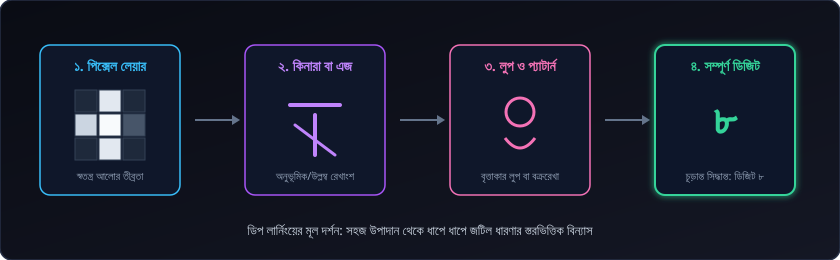

একটি ৩ চেনার রহস্য ও ভিজ্যুয়াল কর্টেক্স। এটি একটি ৩। বেশ অগোছালোভাবে লেখা এবং মাত্র ২৮ গুণন ২৮ পিক্সেলের অত্যন্ত কম রেজোলিউশনে রেন্ডার করা, তবুও আপনার মস্তিষ্ক কোনো দ্বিধা ছাড়াই একে ৩ হিসেবে চিনে ফেলছে। আর আমি চাই আপনারা এক মুহূর্তের জন্য ভেবে দেখুন—মস্তিষ্ক কত অবলীলায় এবং কোনো কষ্ট ছাড়াই এই বিস্ময়কর কাজটি সম্পন্ন করে ফেলে।
কিন্তু যদি কোনো প্রোগ্রামারকে বলা হয় শুধুমাত্র 'if-else' শর্ত বা প্রথাগত কোডিং দিয়ে একটি সাধারণ কম্পিউটার প্রোগ্রাম লিখতে যা ২৮×২৮ গ্রিড দেখে বলে দেবে এটি কোন সংখ্যা, তবে সেই কাজটি প্রায় অসম্ভব হয়ে দাঁড়ায়। প্রথাগত নিয়মমাফিক অ্যালগরিদম ব্যর্থ হলেও কৃত্রিম নিউরাল নেটওয়ার্ক (Artificial Neural Network) মানুষের মস্তিষ্ককে অনুকরণ করে এই সমস্যাটি অবিশ্বাস্য সফলতার সাথে সমাধান করে।
প্রথাগত নিয়মমাফিক অ্যালগরিদম ব্যর্থ হলেও কৃত্রিম নিউরাল নেটওয়ার্ক (Artificial Neural Network) মানুষের মস্তিষ্ককে অনুকরণ করে এই সমস্যাটি অবিশ্বাস্য সফলতার সাথে সমাধান করে। আসুন দেখি এই নেটওয়ার্কের ভেতরে আসলে কী ঘটে।
নিউরন আসলে কী এবং লেয়ার কীভাবে কাজ করে। শুরুতেই একটি মৌলিক প্রশ্ন করা যাক: নিউরন আসলে কী? একদম প্রাথমিক পর্যায়ে নিউরনকে কেবল এমন একটি পাত্র ভাবুন যা একটি বাস্তব সংখ্যা ধারণ করে—সুনির্দিষ্টভাবে শূন্য থেকে এক এর মধ্যবর্তী একটি সংখ্যা।
নিউরনের ভেতরের সংখ্যাটিকে তার অ্যাক্টিভেশন (Activation) বলা হয়। যেহেতু আমাদের ছবিতে ২৮ গুণন ২৮ অর্থাৎ সর্বমোট ৭৮৪টি পিক্সেল রয়েছে, তাই আমাদের নেটওয়ার্ক শুরু হয় ইনপুট লেয়ারে থাকা ৭৮৪টি নিউরন দিয়ে। প্রতিটি নিউরন সংশ্লিষ্ট পিক্সেলের উজ্জ্বলতা ধারণ করে—কালো পিক্সেলের জন্য ০ থেকে শুরু করে সম্পূর্ণ সাদা পিক্সেলের জন্য ১ পর্যন্ত।
নেটওয়ার্কের অপর প্রান্তে রয়েছে আউটপুট লেয়ার, যা ১০টি নিউরন নিয়ে গঠিত—০ থেকে ৯ পর্যন্ত প্রতিটি সম্ভাব্য ডিজিটের জন্য একটি করে। এই নিউরনগুলোর অ্যাক্টিভেশন নির্দেশ করে নেটওয়ার্কের আত্মবিশ্বাসের মাত্রা। যদি ৩ নম্বর নিউরনটির অ্যাক্টিভেশন সবচেয়ে বেশি হয়, তবে নেটওয়ার্ক রায় দেয় যে ছবিটি ৩। মানুষ যেমন জটিল অবজেক্টকে সরল অংশে ভাগ করে দেখে (যেমন ৯ = লুপ + খাড়া দাগ), নিউরাল নেটওয়ার্কের হিডেন লেয়ারগুলোও পর্যায়ক্রমে ছোট ছোট প্রান্ত, কোণ এবং জ্যামিতিক উপাদান শনাক্ত করে সামগ্রিক অবয়ব গঠন করে। প্রথম হিডেন লেয়ার ছোট ছোট প্রান্ত ও কোণ শনাক্ত করে, এবং দ্বিতীয় হিডেন লেয়ার লুপ ও রেখাংশ জোড়া লাগিয়ে পূর্ণাঙ্গ ডিজিটের অবয়ব তৈরি করে।
ওয়েটেড সাম, বায়াস এবং সিগময়েড স্কুইশিং। এক লেয়ারের অ্যাক্টিভেশন কীভাবে পরবর্তী লেয়ারের অ্যাক্টিভেশন নির্ধারণ করে? আমরা প্রথম স্তরের প্রতিটি নিউরনকে পরবর্তী স্তরের প্রতিটি নিউরনের সাথে সংযুক্ত করি। প্রতিটি সংযোগের সাথে যুক্ত থাকে একটি সংখ্যা, যাকে বলা হয় ওজন বা ওয়েট (Weight)। দুটি নিউরনের মধ্যকার সংযোগের শক্তিকে বলা হয় ওয়েট বা ওজন। ধনাত্মক ওজন পরবর্তী নিউরনকে প্রজ্বলিত করে, আর ঋণাত্মক ওজন তাকে নিস্তেজ রাখে।
পূর্ববর্তী লেয়ারের অ্যাক্টিভেশনগুলোর সাথে ওয়েটের গুণফলের সমষ্টি এবং বায়াস। বায়াস (Bias) হলো নিউরনের নিষ্ক্রিয়তা কাটিয়ে সক্রিয় হওয়ার একটি সীমা বা থ্রেশহোল্ড। ধনাত্মক বায়াস নিউরনটিকে সহজে জ্বলে উঠতে উৎসাহিত করে, আর ঋণাত্মক বায়াস তাকে সহজে জ্বলতে দেয় না। কিন্তু এই যোগফলটি যেকোনো বিশাল বাস্তব সংখ্যা হতে পারে। একে শূন্য থেকে একের মধ্যে সীমাবদ্ধ রাখার জন্য সিগময়েড ফাংশন (Sigmoid Function) দিয়ে সংকুচিত বা 'স্কুইশ' করা হয়: $\sigma(z) = \frac{1}{1 + e^{-z}}$। সিগময়েড অ্যাক্টিভেশন ফাংশন—যা পুরো বাস্তব সংখ্যা রেখাকে (0, 1) ব্যবধানে ম্যাপ করে।
আধুনিক ডিপ নেটওয়ার্কে সিগময়েডের পরিবর্তে ব্যাপকভাবে ReLU ব্যবহার করা হয়: f(x) = max(0, x)। এটি ভ্যানিশিং গ্রেডিয়েন্ট সমস্যা দূর করে এবং নেটওয়ার্কের প্রশিক্ষণ বহুগুণ দ্রুততর করে। আধুনিক নোট: গভীর নেটওয়ার্কে সিগময়েডের পাশাপাশি প্রায়শই রেলু বা রেকটিফাইড লিনিয়ার ইউনিট ব্যবহৃত হয়, যা ঋণাত্মক ইনপুটে শূন্য এবং ধনাত্মক ইনপুটে অবিকল মানটি প্রবাহিত করে।
অতএব, একটি নিউরনের চূড়ান্ত সক্রিয়তা নির্ধারিত হয় $\sigma\left(\sum_j w_j a_j + b\right)$ — অর্থাৎ সিগমা অফ ওয়েটেড সাম প্লাস বায়াস সমীকরণের মাধ্যমে।
ম্যাট্রিক্স-ভেক্টর গুণনের মাধ্যমে সংহত রূপ। প্রতিটি নিউরনের জন্য আলাদা আলাদা সমীকরণ না লিখে লিনিয়ার অ্যালজেব্রার মাধ্যমে পুরো একটি লেয়ারের গণনা এক লাইনে প্রকাশ করা যায়। পৃথক পৃথক হাজার হাজার সমীকরণ লেখার বদলে লিনিয়ার অ্যালজেব্রা আমাদের এক অসাধারণ নান্দনিক ও কম্প্যাক্ট রূপ প্রদান করে। প্রথম স্তরের সব অ্যাক্টিভেশনকে ভেক্টর a, বায়াসগুলোকে ভেক্টর b এবং সংযোগকারী সমস্ত ওজনকে ম্যাট্রিক্স W আকারে সাজালে পাই:
ডিপ লার্নিংয়ের মৌলিক সমীকরণ: ম্যাট্রিক্স গুণন, বায়াস যোগ এবং উপাদানভিত্তিক অ্যাক্টিভেশন। এখানে ম্যাট্রিক্স W-এর প্রতিটি সারি পরবর্তী লেয়ারের একটি নির্দিষ্ট নিউরনে আগত সমস্ত ওজনকে ধারণ করে। ম্যাট্রিক্স গুণনের ফলে একসাথে পুরো স্তরের সমস্ত নিউরনের ওয়েটেড সাম যুগপৎভাবে নির্ণয় করা সম্ভব হয়, যা আধুনিক গ্রাফিক্স প্রসেসর বা জিপিইউ-তে সুপারফাস্ট চলে।
গণিতের সৌন্দর্য: লিনিয়ার অ্যালজেব্রা কেবল গণনা সহজ করে না, এটি নিউরাল নেটওয়ার্কের অভ্যন্তরীণ স্থাপত্যের সাথে অবিচ্ছেদ্যভাবে মিশে আছে। একটি ম্যাট্রিক্সের সারি আর কলামের এই সাজানোই আমাদের বলে দেয় কোন নিউরন কার কাছ থেকে কতটা শক্তি পাবে।
১৩,০০০টি নব টিউন করার চ্যালেঞ্জ। আমাদের এই ৪ স্তরের সাধারণ নেটওয়ার্কটিতে মোট কতগুলো পরিবর্তনশীল প্যারামিটার রয়েছে? আসুন হিসেব করে দেখি আমাদের এই ছোট্ট নেটওয়ার্কটিতে মোট কতগুলো পরিবর্তনশীল প্যারামিটার রয়েছে।
তিনটি লেয়ার সংযোগের সর্বমোট ওজনের সংখ্যা। ওজন ও বায়াস মিলিয়ে মোট পরিবর্তনযোগ্য প্যারামিটার। একটি নিউরাল নেটওয়ার্কের 'শেখা' বলতে বোঝায় এই ১৩,০০২টি ডায়ালকে এমন নিখুঁত মানে সেট করা যেন যেকোনো হস্তাক্ষরের সংখ্যা দিলে সঠিক আউটপুট নিউরনটি সক্রিয় হয়। যখন আমরা বলি একটি নিউরাল নেটওয়ার্ক শিখছে, তার আক্ষরিক অর্থ হলো এই ১৩,০০২টি সংখ্যার নিখুঁত মান খুঁজে বের করা যাতে সঠিক ডিজিটটি চেনা যায়। পরবর্তী অধ্যায়ে আমরা দেখব গ্রেডিয়েন্ট ডিসেন্ট কীভাবে স্বয়ংক্রিয়ভাবে এই ডায়ালগুলোকে টিউন করে।
উপসংহার: নিউরাল নেটওয়ার্ক হলো মূলত একটি উচ্চমাত্রিক গাণিতিক ফাংশন—যা ৭৮৪টি বাস্তব সংখ্যাকে ইনপুট হিসেবে নিয়ে ১০টি সম্ভাব্যতা প্রদান করে। এই ১৩,০০২টি নবের সঠিক সমন্বয়ই আমাদের হস্তাক্ষর সংখ্যা চেনার ক্ষমতা দেয়।
ইন্টারেক্টিভ ল্যাব: লাইভ ক্যানভাসে ডিজিট ড্রয়িং ও ফরোয়ার্ড পাস। ক্যানভাসে মাউস বা আঙুল দিয়ে ০ থেকে ৯ পর্যন্ত যেকোনো সংখ্যা আঁকুন এবং লাইভ দেখুন কীভাবে ৭৮৪টি ইনপুট পিক্সেল হিডেন লেয়ারের মাধ্যমে প্রবাহিত হয়ে আউটপুট প্রেডিকশন তৈরি করে। নিচের চিত্র ও ভিডিও ট্যাব পাল্টিয়ে স্তর-ভিত্তিক বৈশিষ্ট্যের উত্তরণ পর্যবেক্ষণ করুন; প্রতিটি স্তরের বিবরণ খুলতে ক্লিক করুন।

২৮×২৮ পিক্সেলের প্রতিটি উজ্জ্বলতা (০–১) একটি করে নিউরনে রূপ নেয়। কালো = ০, সাদা = ১।
প্রতিটি নিউরন ওয়েটেড সাম + বায়াস নেয়, তারপর সিগময়েডে ০–১ পরিসরে সংকুচিত করে ছোট প্রান্ত ও কোণ শনাক্ত করে।
এই স্তর প্রান্ত ও কোণগুলোকে জোড়া লাগিয়ে লুপ ও রেখাংশের মতো বড় গঠন তৈরি করে।
০–৯ প্রতিটি ডিজিটের জন্য একটি নিউরন। সবচেয়ে বেশি অ্যাক্টিভেশনবালা নিউরনটিই নেটওয়ার্কের রায়।